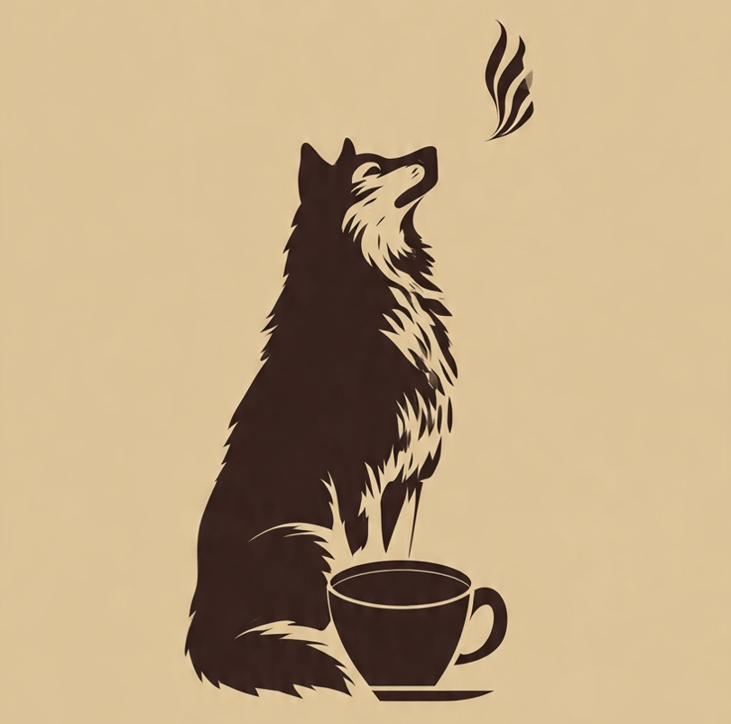

Cãoféteria caféchorro
Bebidas quentes
- Caramelo Capuccino
Um abraço quente de um caramelo em forma de xícara, capuccino preparado com:
- café expresso
- leite integral vaporizado
- caramelo artesanal
- (Contém lactose).
- Expresso Salsichinha
Café expresso pequeno no tamanho, mas grande no amor
- grãos 100% arábica com torra média para um sabor marcante .
- (Livre de alérgenos comuns)
- cachocolate-quente
Tão reconfortante quanto um carinho na barriga
- leite quente cremoso
- chocolate 50% cacau
- essência de baunilha
- (Contém lactose)
- Border Col-latte
Para quem gosta de ordem e energia, traz o equilíbrio perfeito entre o:
- café expresso
- leite cremoso e
- uma pitada de cardamomo para despertar os sentidos
- (Contém lactose).
Bebidas geladas
- Dalmata Mocha Gelado
Um visual clássico com pintinhas de sabor, servido com:
- gelo,
- leite,
- café espresso,
- calda de chocolate amargo e
- gotas de chocolate branco
- (Contém lactose e derivados de soja).
- Golden Shake
Dourado e irresistível, este shake mistura:
- sorvete de baunilha,
- leite,
- mel silvestre e
- um toque de cúrcuma
- (Contém lactose).
Chá-u-Chau
Este chá gelado é preparado com:
- infusão vibrante de hibisco e frutas vermelhas,
- cubos de gelo,
- um toque de xarope de amora e
- uma rodela de limão siciliano para um frescor cítrico
- (Livre de alérgenos comuns).
Frappucão
Bebida feita com café expresso batido com:
- leite integral bem gelado,
- açúcar de cana,
- muito gelo e finalizada com uma
- generosa camada de chantilly e
- calda de chocolate meio amargo
- (Contém lactose).
Pet-iscos doces
- Biscoitinhos de Chocolate
Crocante por fora e macio por dentro, preparado com:
- farinha de trigo,
- manteiga,
- açúcar mascavo e
- gotas de chocolate meio amargo
- (Contém glúten, lactose e ovos).
Beagle Muffin de Mirtilo
Um farejador de sabores que leva:
- farinha de trigo,
- iogurte natural,
- mirtilos frescos e
- raspas de limão
- (Contém glúten e lactose).
Brownie Pitbull
Um doce robusto e intenso, feito com:
- cacau em pó,
- manteiga,
- ovos e
- pedaços de nozes crocantes
- (Contém glúten, ovos, lactose e nozes).
Cãojica
O conforto de uma receita clássica numa tigela, feita com:
- grãos de milho branco cozidos lentamente em
- leite integral e
- leite de coco, adoçada com
- leite condensado e finalizada com
- uma pitada de canela em pó
- (Contém lactose).
Pet-iscos salgados
- Hot-doguinho
Uma versão pequena e valente para um lanche rápido, preparada com:
- pão de brioche macio com uma
- mini salsicha grelhada,
- queijo derretido e um toque de
- maionese de ervas
- (Contém glúten e lactose).
- Au-Au-Mondegas
Uma porção de pequenas e valentes almondegas para um lanche rápido, preparada com:
- Bolinhos de carne bovina artesanal
- Farinha de rosca
- tomilho e manjericão
- Molho pesto de manjericão
- Salsinha
- (Contém glúten, oleaginosas e lactose).
- Cãoxinha de frango
Baixinha, gordinha e muito bem recheada.:
- Massa de batata ultra cremosa
- frango desfiado
- Tempero de páprica
- farinha panko
- (Contém glúten, lactose e ovos).